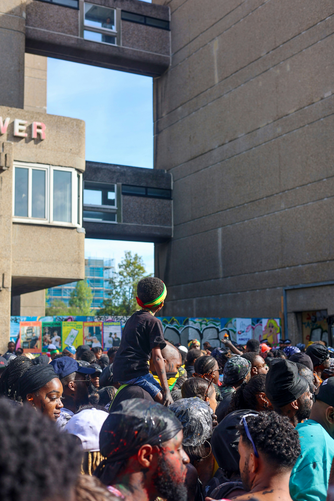

Vibrant Expressions: AI, Art, and Caribbean Joy

Our aspiration is to empower Black and Caribbean communities through active involvement, learning, and exploration of AI. By doing so, we aim to embrace Black joy and make impactful contributions to global dialogues on AI, data, creativity, and societal issues. Anchored in the dynamic Trinidad Carnival, also recognized as the Trinidad & Tobago Carnival, with over 70 vibrant celebrations worldwide in the Caribbean, US, UK, and Europe. We reimagine and explore Carnival and its diaspora in innovative and creative avenues. Artistic mediums serve as conduits through which Black and Caribbean communities have historically battled oppression, built solidarity, exchanged wisdom, and, above all, discovered and spread boundless joy. With this initiative, we honor the inventiveness, fortitude, and liveliness of Black and Caribbean narratives and traditions.